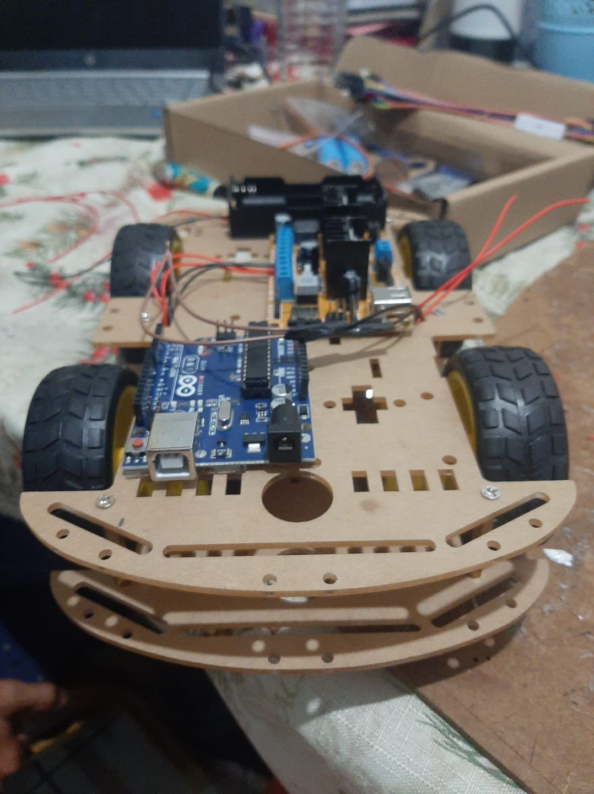

Estudiantes del Instituto Técnico Francisco Miranda fortalecen sus conocimientos en Robótica
Como parte del compromiso con la educación técnica e innovadora, el Instituto Técnico Francisco Miranda ha implementado nuevos módulos formativos en el área de robótica, brindando a sus estudiantes oportunidades para desarrollar habilidades en tecnología, programación y resolución de problemas.

Los jóvenes de las diferentes carreras técnicas han participado en talleres prácticos sobre electrónica básica, sensores, motores, lógica de control y programación de placas como Arduino y micro:bit. Estos talleres fueron impartidos tanto por docentes del instituto como por especialistas invitados del ámbito tecnológico.
Además de adquirir conocimientos técnicos, los estudiantes han desarrollado proyectos funcionales, como carros seguidores de línea, sistemas de alarma con sensores de movimiento, brazos robóticos controlados por joystick, y estructuras automatizadas con lógica programable. Todos estos prototipos fueron diseñados con materiales accesibles, promoviendo la creatividad y el ingenio.

“La robótica es una herramienta poderosa para despertar el interés de los estudiantes en la ciencia y la tecnología. Les permite experimentar, equivocarse y mejorar, desarrollando una mentalidad crítica y analítica”, expresó el docente responsable del área técnica.
Los alumnos también han tenido la oportunidad de presentar sus avances en exposiciones internas del instituto, donde demostraron con entusiasmo el funcionamiento de sus robots ante otros compañeros, padres de familia y autoridades educativas.
Este esfuerzo forma parte de la visión institucional de formar estudiantes preparados para el futuro, con competencias en áreas de alta demanda como la automatización, la inteligencia artificial y la tecnología aplicada. Se espera que estos conocimientos abran nuevas puertas para su desarrollo profesional y académico.
El Instituto Técnico Francisco Miranda continuará apostando por la innovación educativa, fortaleciendo sus espacios de aprendizaje práctico y promoviendo el talento joven a través de la ciencia y la tecnología.